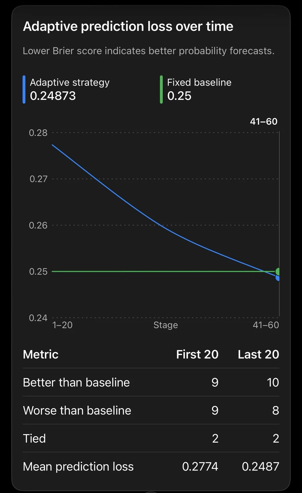
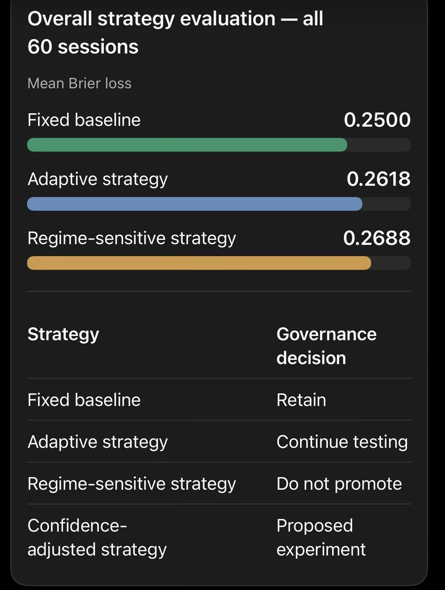

Blog / AI agents and learning / Intelligence That Compounds
Watching a system learn
Sixty sessions of decisions, outcomes and adaptations, measured against a baseline that never learns
This part is built from the session-by-session record of the experiment, which is the most informative thing the project has produced so far. It covers 60 trading sessions of Brent crude oil. Before each session, three strategies stated the probability that the price would rise; after it, each forecast was scored and the two learning strategies updated what they knew. Read in order, the sessions show a system starting from nothing, growing confident during a rally, being caught out by the reversal, adjusting, and eventually concluding that neither of its learning strategies was good enough to adopt.
I have followed the record chronologically, and at the sessions that taught the most I have set out what the strategy had seen, what it decided, what happened, how the decision scored and what it did next. The components named along the way are the ones described in Part 1.
How the experiment worked
The learning algorithm was executed over 60 trading sessions of the Brent spot price, from 25 August to 17 November 2026, one session at a time and in order.1 Each forecast used only the sessions before it. Three strategies took part:
| Strategy | How it forms its probability |
|---|---|
| Fixed baseline | Always 50%. It never learns, which makes it the reference for whether learning helped. |
| Adaptive | The share of rises seen so far, starting from no prior view and updated after every outcome |
| Regime-sensitive | The same, but counted separately for sessions that followed a rise and sessions that followed a fall |
Each forecast was scored with the Brier score, the squared difference between the stated probability and what happened. A forecast of 80% that proves wrong scores 0.64, and always saying 50% scores 0.25, so lower is better and confident mistakes are expensive.2 Over the 60 sessions that gave 180 forecast comparisons, and the system wrote one reflection per session into its learning journal. Supabase held the records, and Notion held the dashboard, journal, hypotheses and strategy register.
The algorithm was run on 24 November over the historical price series. The 60 sessions therefore describe the order in which learning happened, and they are not 60 days of live operation. Prices were the only input, which isolates one particular form of learning, statistical adaptation from scored outcomes. The technical appendix at the end covers implementation status and the methodological limits.
I set it up this way because of the monitoring workflow described in the prologue. Seven weeks of scheduled commentary on Brent had produced plenty of analysis and very little that could be checked. Here every decision had to be recorded before its outcome, and every outcome scored, so that whatever happened would at least be measurable.
![The agent's dashboard for the 60-session experiment: Brent spot price from late August to 17 November 2026, rising from about $88 to above $130 and falling back to about $93; below it, cumulative Brier loss for the adaptive strategy in teal and the regime-sensitive strategy in amber, both settling slightly above the dashed fixed baseline at 0.25; overall Brier scores fixed 0.2500, adaptive 0.2618, regime 0.2688; and the note that neither adaptive strategy beats the baseline overall, with no promotion and no trading returns claimed.](img/compounds/replay-dashboard.webp)
Before going through the sessions, it helps to see the whole record at once. Figure 2 plots how confident each learning strategy was before every session, with the actual outcome underneath.
![Line chart of the probability of a rise stated before each of 60 sessions, from 25 August to 17 November 2026. The adaptive strategy, in blue, starts at 50%, dips to 25% after two falls, climbs steadily to about 71% during a run of rises in early September, then declines gradually through October and settles around 44% by mid-November. The regime-sensitive strategy, in orange, follows a much more volatile path: it peaks at 77.8% on 10 September, when Brent rose 10.5%, and 80% on 11 September, when Brent fell 2.4%, then swings repeatedly between about 36% and 75%, ending around 40%; on 4 November it stood at 41.4% and Brent fell 14.2%, and on 5 November at 40% and Brent rose 6.7%. A dashed line marks the fixed 50% baseline. A strip below marks each session's outcome as a rise or a fall. The three blocks of 20 sessions are labelled with the adaptive strategy's mean Brier loss: 0.277, 0.259 and 0.249, against 0.250 for the baseline.](img/compounds/exp-confidence.webp)
Starting without experience
On 25 August neither learning strategy had seen anything, so both said 50%, the same as the baseline. Brent fell. With one fall on record, the adaptive strategy said 33.3% the next day, and Brent fell again. With two falls on record it said 25%, and Brent rose 2.75%. That forecast scored 0.5625, more than twice the baseline's 0.25.
This is easy to see on the left of Figure 2. With almost no experience, each observation carries a lot of weight, and two sessions had pushed the adaptive strategy further from 50% than it would go at any point afterwards. Starting from no prior view sounds neutral. In practice it made the strategy very sensitive to its first few outcomes.
Building confidence
Between 1 and 10 September Brent rose in eight consecutive sessions, and the adaptive strategy's confidence rose with it, one outcome at a time: 33.3% before the run, 50% after two rises, 60% after four, and 69.2% on 10 September, by which point it had recorded 8 rises in 11 sessions. The regime-sensitive strategy moved faster, because it was counting only what had followed a rise, and almost everything recently had.
Nothing about either strategy's rules changed during this period. Their experience changed, and their decisions changed because of it, which is about as plain an example of learning from outcomes as I could have asked for.
Confident predictions
By 10 September Brent had risen in six of the seven sessions that followed a rise, so the regime-sensitive strategy put the chance of another rise at 77.8%, its most confident forecast so far. Brent rose 10.47%, the largest single move in the period. The forecast scored 0.049 against the baseline's 0.25, the best result of any forecast in the experiment.
Failure and reversal
The next day the strategy had seven rises in eight sessions after a rise, and raised its confidence to 80%. Brent fell 2.41%. That forecast scored 0.64, the worst result in the experiment, and gave back the previous day's gain almost twice over. The adaptive strategy, at 71.4%, scored 0.51.
| 10 September | 11 September | |
|---|---|---|
| Previous experience | Six rises in the seven sessions after a rise | Seven rises in the eight sessions after a rise |
| Decision | 77.8% chance of a rise | 80.0% chance of a rise |
| Observed outcome | Brent rose 10.47% | Brent fell 2.41% |
| Evaluation | Brier 0.049 against the baseline's 0.25: supported | Brier 0.64 against 0.25: confidence misplaced |
| Subsequent change | Confidence raised to 80% | Its next forecast fell to 50% |

The learning journal recorded each of these sessions as it went: the probability before the outcome, the realised move, the loss against the baseline, and the probability the strategy would carry into the next session.
![Notion page extract: Learning Journal, 60 outcome-driven reflections. Note: retrospective, mechanically derived reflections from stored statistical results, not historical LLM reasoning. Session 11, 9 September 2026: before outcome adaptive P(up) 66.7%, regime 75.0%; realised 3.19%; adaptive loss 0.1111 versus 0.2500 baseline; beat baseline; next adaptive probability 69.2%. Session 12, 10 September: adaptive 69.2%, regime 77.8%; realised 10.47%; loss 0.0947; beat baseline; next 71.4%. Session 13, 11 September: adaptive 71.4%, regime 80.0%; realised minus 2.41%; loss 0.5102 versus 0.2500; underperformed baseline, confidence was misplaced; next 66.7%.](img/compounds/notion-journal.webp)
What I take from Case A is that the same accumulated evidence did two things at once. It let the strategies recognise the trend, and it made them most confident at exactly the point where the trend ended. I don't think that is a quirk of these two simple strategies; any system that learns from a run of outcomes faces it.
Updating after failure
What a system does after a failure says a lot about how it learns, and here the two strategies behaved very differently.
The adaptive strategy carries its whole history. After the fall on 11 September it lowered its view only slightly, to 66.7%, because one fall barely changes a record of nine rises in thirteen sessions. It then repeated the September pattern on a smaller scale, at 68.8% and right on 15 September, then 70.6% and wrong on 16 September. When Brent fell in five consecutive sessions from 16 to 22 September, the adaptive strategy went on saying that a rise was more likely than not, easing from 70.6% to 57.1%, and scored worse than the baseline in every one of them. A long memory made it stable, and it also made it slow.
The regime-sensitive strategy reacted immediately. After each fall it looked only at what had followed earlier falls, so over the same five sessions its view dropped from 75% to 40% and it lost much less. The speed worked against it a day later, when it stood at 36.4% on 23 September and was caught by a rebound. For the rest of the experiment it swung between about 40% and 71%, as Figure 2 shows.
November tested both again, after Brent had fallen from about $120 at the end of October.
| 4 November | 5 November | |
|---|---|---|
| Previous experience | A falling market; the adaptive strategy had seen 23 rises in 50 sessions | One more fall recorded |
| Decision | Regime-sensitive: 41.4% chance of a rise, so 58.6% for a fall. Adaptive: 46.2% | Regime-sensitive: 40.0%, so 60% for a fall. Adaptive: 45.3% |
| Observed outcome | Brent fell 14.19% | Brent rebounded 6.66% |
| Evaluation | Both beat the baseline: 0.171 and 0.213 against 0.25 | Both lost: 0.36 and 0.299 against 0.25 |
| Subsequent change | Both leaned further towards a fall | Both moved back towards 50%, the regime-sensitive strategy past it to 52% |

By November the adaptive strategy's probabilities sat in the mid-40s. That is close to how often Brent had actually risen over the period, in 27 of 60 sessions, or 45%. Its forecasts were much less extreme than in September, so its wins were smaller and its losses were much smaller. In effect it had learned the base rate of the market it was watching. The regime-sensitive strategy had also adapted to falling prices, and it stayed exposed to a sudden rebound.
These sessions were chosen because they show the mechanism clearly, so they should be read as illustrations. The measurements in the next section cover all 60.
Measuring across stages
To see whether the strategies improved, the sessions were grouped into three blocks of 20 and compared mean Brier loss.

| Sessions | Adaptive | Regime-sensitive | Fixed baseline |
|---|---|---|---|
| 1 to 20 | 0.2774 | 0.2577 | 0.2500 |
| 21 to 40 | 0.2593 | 0.2966 | 0.2500 |
| 41 to 60 | 0.2487 | 0.2521 | 0.2500 |
| All 60 | 0.2618 | 0.2688 | 0.2500 |
The adaptive strategy improved in each block. Its loss fell by 10.3% from the first block to the last. In the first 20 sessions it was better than the baseline 9 times and worse 9 times; in the last 20 it was better 10 times and worse 8 times, and its loss of 0.2487 was 0.5% below the baseline's. The regime-sensitive strategy showed no such progression, and its worst block was the middle one.

The record also shows how well confidence matched reality. In the ten sessions where the regime-sensitive strategy was at least 65% sure of a rise, averaging 72.6%, Brent rose six times. In the nine sessions where the adaptive strategy put the chance of a rise below 45%, averaging 39.1%, Brent rose six times. In both cases the stated confidence ran ahead of the evidence, and the Brier score charged for it.
Comparing with the fixed baseline
Across the whole period, the improvement was not enough. Session by session, the adaptive strategy beat the fixed baseline 28 times, did worse 27 times and tied 5 times, and the regime-sensitive strategy beat it 23 times, did worse 27 times and tied 10 times. Over all 60 sessions, the adaptive strategy's loss was 4.7% higher than simply saying 50% every day, and the regime-sensitive strategy's was 7.5% higher.
I think two things explain the gap. Much of the adaptive strategy's improvement came from becoming less confidently wrong as it converged on a base rate close to 50%, which is where the baseline started. And in a market that went from $88 to above $130 and back to $93 in twelve weeks, the past frequency of rises was a weak guide to the next session. The adaptive strategy appears to have learned most of what prices alone could teach it, and the baseline shows how little that was.
It is worth being exact about the kind of learning involved. The strategies learned statistically, by updating counts of outcomes, with no language model in the loop, and every probability the adaptive strategy produced can be reproduced from the record. That is learning in a full sense, and it is the easiest kind to audit. The 60 reflections in the journal were derived from those records rather than written by a model reasoning about each day, and the journal says so at the top. Reflection by a language model, interpreting outcomes and proposing changes to its own strategy, is the next layer of the reference design. What this experiment provides for it is a record against which any claimed improvement can be checked.
Rejecting a strategy and choosing the next experiment
Given those results, the governance decisions were straightforward. The fixed baseline was retained. The adaptive strategy was not promoted, but it stays under test because it was still improving. The regime-sensitive strategy was not promoted.

The next experiment came out of the failures in September and November. Both strategies lost most heavily when they were most confident, so the proposal is a confidence-adjusted strategy that pulls its probabilities towards 50% until enough evidence has built up to justify moving away. The hypotheses and the protocol for testing them were written down before any test.
![Notion page extract: Hypotheses and Experiments. H01, accumulated directional frequency beats fixed probability, 0.2618 versus 0.2500, not supported. H02, prior direction improves forecast, 0.2688 versus 0.2500, not supported. H03, shrinkage reduces overconfidence, not tested, proposed. H04, physical supply evidence improves probability forecasts, news not integrated, proposed. Prospective protocol: freeze candidate and baseline, use same cutoff and instrument, minimum 30 paired observations, compare Brier and coverage, require human approval; no claims of statistical significance.](img/compounds/notion-hypotheses.webp)
Every candidate follows the same protocol: freeze the candidate and the baseline, use the same cutoff and the same instrument, collect at least 30 paired future observations, compare Brier score and coverage, and require my approval before anything changes. Because each test runs forward on dates that had not happened when it began, this is walk-forward evaluation, the usual safeguard against strategies that only fit the past.2
What I take from it
The headline figure could easily have been the 10.3% improvement. What stopped it was the architecture. Because every decision was recorded before its outcome, experience could accumulate and change the next decision, and Figure 2 is that change made visible. Because evaluation compared each strategy with a baseline that never learned, on the same sessions, it could show that the adaptive strategy was improving and still not good enough. And because adoption required a human decision against rules set in advance, the system kept its baseline and turned its failures into the next experiment.
The conclusion I drew at the end of the experiment still seems right to me: learning is more than accumulating experience, because it depends on measuring whether that experience improves decisions and rejecting the adaptations that do not. A system that treats learning, measured improvement and permission to change its behaviour as the same thing will eventually promote its luckiest guesses.
Part 3 considers what this means inside an organisation, where decisions are commercial, outcomes can take months, and approving a change has real consequences.
Technical appendix
Implementation status. Implemented and tested: Supabase as empirical memory, with seven of the ten designed tables, two of them for the learning experiments; Notion as reflective memory, with the dashboard, learning journal, hypotheses, strategy register and governance pages; the 60-session sequential learning experiment, with scoring, reflections, strategy comparison and governance decisions; and a manual test of recording live forecasts, which produced the first forecasts on 24 November, not yet scored and not part of this analysis. Designed, not yet implemented: the scheduled engines running unattended, Firecrawl research acquisition, the remaining three tables, forecasting and strategy revision informed by news and the model, automated recording of the monitoring workflow's views, and prospective champion and challenger testing.
Methodological limitations.
- The experiment was executed on 24 November 2026 over the historical series DCOILBRENTEU, the EIA price republished by FRED, in sequential order. It does not reconstruct what was known on each historical date: EIA publishes the series with a delay, and the experiment assumed each price was available immediately.
- The price inputs have not yet been independently re-checked against the source.
- Prices were the only input. No news was collected for the period and no language-model forecasts were made, so the experiment says nothing about the value of research or model judgement.
- Sixty sessions is a small sample, and market sessions are not independent of one another. No claim of statistical significance is made.
- Cases A and B illustrate the mechanism; they are not independent tests of it.
- The results are forecasting scores, not investment performance, and nothing here is investment advice.
Sources
- U.S. Energy Information Administration, Europe Brent Spot Price FOB, accessed November 2026; republished by FRED as DCOILBRENTEU, the series used in the experiment.
- Wikipedia, Brier score and Walk forward optimization.